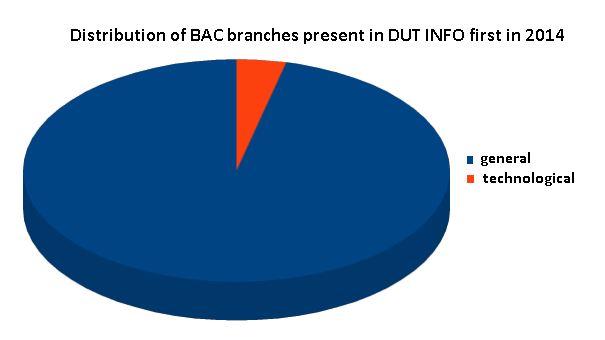
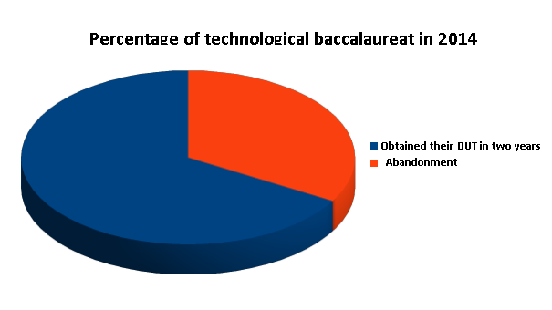
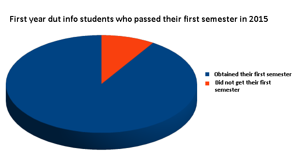
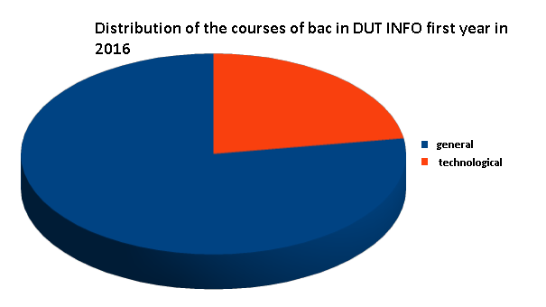
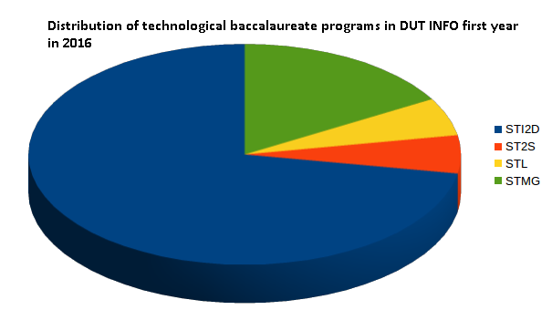

The department recruits students each year to integrate the first year. These students generally come from general baccalaureate, few come from a technological baccalaureate. However
We have observed in recent years that the rate of students from Baccalauréat technologique was constantly increasing. We are providing these results.

Only three students joined the first year of DUT in 2014 in Lens.

Two out of three students obtained their DUT in two years, the third one was abandoned.

Of the eleven students who came from LAC, ten earned their first semester.

In 2016, eighteen first-year students come from technological BACs.

18 technological BACs present in Computer Science:
13 students come from STI2D.
1 student comes from STL.
1 student comes from ST2S.
3 students come from STMG.
Our IUT is looking for diversity and plans to reach out to students from technological BACs.
If you have any questions, please contact us! (Information available in the "Contact" tab)